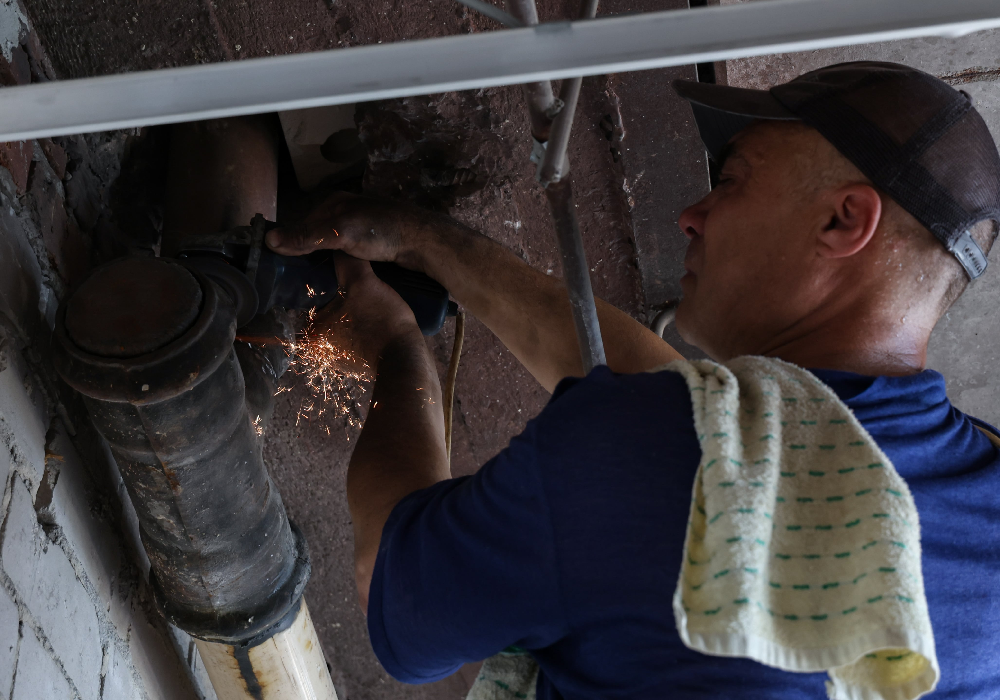

Heading level two
Body text is e-Ukraine Light at 18px with a 1.65 line height, black on white, in a measure of about 38rem. Paragraphs have even gaps; strong text uses the bold cut, and links in text are black and underlined. Cyrillic sample: Дослідження впливу війни на українських науковців, їхні ґрунтовні архіви та лабораторії.
Heading level three
Headings are Noto Serif 400 and sit close to the text they introduce, with air above them.
Heading level four
Level four is one step below level three (the only invented size here).
Lists
- Unordered item with a mono marker
- Second item with a longer line that wraps onto a second row on a phone to show the hanging indent
- Third item
- Nested item
- Another nested item
- First ordered step
- Second ordered step
Blockquote
A plain Markdown blockquote: a citation inside the running text, marked with a 3px rule.
Shortcodes
figure

gallery
-
At the microscope -
The laboratory corridor
embed
quote
We saved the collection because we never stopped counting it.
Text continues after the shortcodes with the normal rhythm. Footnote reference1.
- The footnote text, as a real numbered list. ↩